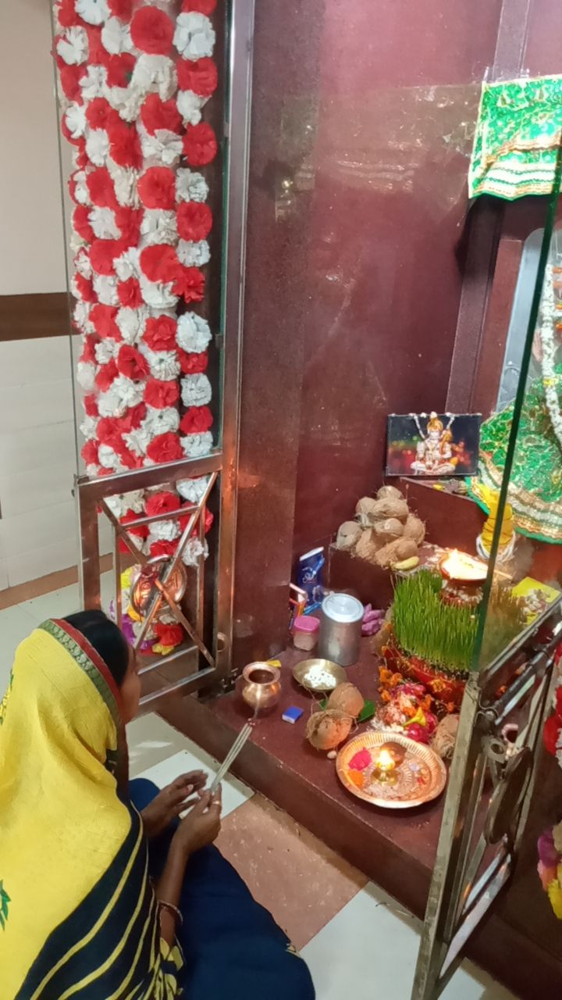

~3 minute read · home puja
संतोषी माता का उद्गम — साधारण घरों के लिए जन्मा संतोष
Santoshi Mata’s origin — contentment born for ordinary homes
माँ जिन्होंने कम माँगा — चने, गुड़, और शांत शुक्रवार।
A Mother who asked for little — fried gram, jaggery, and a peaceful Friday.

कथा · The story
आधुनिक-लोक हिंदू भक्ति संतोषी माता को संतोष की देवी कहती है, लोककथा में गणेश-परिवार की कृपा से जुड़ी। करोड़ों के लिए उनका उद्गम शुक्रवार व्रत है: सादा भोजन, सादी कथा, अहंकारी भोज से इनकार। पुरानी सूची पढ़ें या घर की नई कथा — नैतिक जन्म स्पष्ट है: संतोष वह देवता जिसे छोटे घर में भी जिया जा सके।
Modern-popular Hindu devotion tells of Santoshi Mata as the goddess of contentment, often linked in folk telling to Ganesha’s family grace. Her origin for millions is the Friday vrat: simple food, simple story, refusal of prideful feasting. Whether one reads older Puranic lists or newer household katha, the ethical birth is clear — santosh (contentment) as a deity you can practice in a small flat.
विस्तृत कथा · Fuller telling
A longer retelling for readers who want more detail — optional; the short story above is enough for a quick home reading.
पहला चरण: अध्यात्म साधारण बजट पर। फिर व्रत को दिखावे की होड़ न बनाएँ। चमत्कार की गारंटी नहीं — अनुशासित आशा।
First movement: spirituality scaled to ordinary budgets. Then the knot: do not turn the vrat into social competition. Keep claims gentle and AdSense-safe — no guaranteed miracles, only disciplined hope. Friday katha listening is the living origin rite.
क्यों · Why this ritual
शुक्रवार संतोषी व्रत संतोष के उद्गम पर लौटता है — भोजन सादा, वाणी कोमल रखें।
Friday Santoshi vrat revisits her origin as contentment — keep the meal simple and the speech kind.
Takeaway for home
Skip one unnecessary purchase this week and note how light that feels.
Continue · आगे पढ़ें
Common questions · सामान्य प्रश्न
संतोषी माता का उद्गम — साधारण घरों के लिए जन्मा संतोष
आधुनिक-लोक हिंदू भक्ति संतोषी माता को संतोष की देवी कहती है, लोककथा में गणेश-परिवार की कृपा से जुड़ी। करोड़ों के लिए उनका उद्गम शुक्रवार व्रत है: सादा भोजन, सादी कथा, अहंकारी भोज से इनकार। पुरानी सूची पढ़ें या घर की नई कथा — नैतिक जन्म स्पष्ट है: संतोष वह देवता जिसे छोटे घर में भी जिया जा सके।
Santoshi Mata’s origin — contentment born for ordinary homes
Modern-popular Hindu devotion tells of Santoshi Mata as the goddess of contentment, often linked in folk telling to Ganesha’s family grace. Her origin for millions is the Friday vrat: simple food, simple story, refusal of prideful feasting. Whether one reads older Puranic lists or newer household katha, the ethical bi…
क्यों यह रीति / Why this ritual?
शुक्रवार संतोषी व्रत संतोष के उद्गम पर लौटता है — भोजन सादा, वाणी कोमल रखें।
घर के लिए takeaway?
Skip one unnecessary purchase this week and note how light that feels.
Feedback · सुधार
Help us validate this page: suggest a correction, add a detail, or highlight something useful for home puja readers.
Feedback is emailed to TirthaYatra for editorial review. It is not published live automatically (safer for quality and ads policy). You can also keep a personal copy on this device.